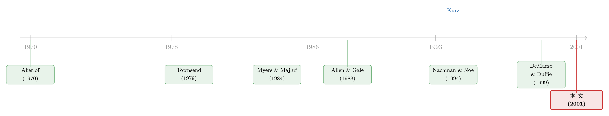

人越多，越要卖「吵得起来」的证券
本文读的是 Garmaise (2001, Review of Financial Studies)：一家缺钱的公司，要把未来的现金流设计成证券卖给一群「各执一词」的投资者。出人意料的结论是——当投资者人数足够多、且他们的分歧只是「理性信念 (rational beliefs)」而非传统的理性预期时，公司最优的做法不是去消除分歧，而是主动制造分歧：发风险证券（如股权）、并把一份资产切成好几张优先级不同的证券来卖。人越多，越要卖那种「吵得起来」的东西。
1 一个反直觉的开场
先问一个看似简单的问题：如果你是一家缺钱的公司，要把同一笔未来现金流卖给市场，你希望投资者对它的看法是趋同，还是分歧？
直觉几乎是脱口而出的：当然希望趋同。分歧意味着有人乐观、有人悲观，而悲观的人会压低出价，把整体卖价拖下来。所以教科书里那条主线——从 Myers–Majluf (1984) 到 Nachman 和 Noe (1994)——给出的处方一向是：发安全的证券（比如债），把大家对证券价值的看法尽量拉到一条线上，让「柠檬问题」无处下口。
但 Garmaise 在这篇 2001 年的 RFS 里给出的答案是：这取决于有几个投资者，以及他们的分歧是哪一种分歧。 当投资者只有两个时，趋同确实更好；可一旦人数涨到三个及以上，而且他们持有的是「理性信念」式的分歧，公司就应该反过来——发风险证券，把分歧最大化。
这听上去像在抬杠。要把它讲清楚，我们得先弄明白两件事：第一，什么叫「理性信念」，它和我们熟悉的「理性预期」差在哪；第二，为什么「人数」会成为决定胜负的那个旋钮。
2 「理性信念」是一种什么样的分歧
在标准的理性预期 (rational expectations) 框架里，所有人最终都知道那个「正确」的分布——分歧只来自信息，而信息是可以被共享、被学习、被收敛掉的。
Kurz (1994a, 1994b) 提出的「理性信念 (rational beliefs)」是对理性预期的一种松绑。它的核心想法是：经济变量只要求是稳定的 (stable) 而非平稳的 (stationary)。稳定，意味着历史数据的经验矩都存在、都有意义，agent 能从数据里学到东西；但它不保证你能从有限（甚至可数无穷）的数据里唯一地识别出真实的数据生成过程。
这道缝隙至关重要。Kurz 证明：很多不同的稳定过程，会对应到同一个「平稳测度」（可以理解成时间序列意义上的「平均」测度）。历史数据只能帮你把这个平均测度还原出来，却没法在共享同一平均测度的多个稳定过程之间做区分。于是——
一个「理性信念」，就是一个数据无法证伪的分布。它是一套「数据没能推翻」的理论或模型。两个看了同样数据、同样聪明的人，可以各自抱着一套完全不同、却都没被数据驳倒的信念。他们都「理性」，但他们就是不一致。
形式上，本文把这件事压缩成一个极简版本。设现金流 P 要么取 Q^1、要么取 Q^2（两个状态），对应的一期测度记作 m_1、m_2。每个 agent 收到私人信号 A 或 B（各 1/2 概率），信念由
$$\Pr(P_t = Q^2 \mid B) = \Pr(P_t = Q^1 \mid A) = \gamma, \qquad \gamma \in (\tfrac12, 1)$$
给出。收到 A 的人偏向相信 Q^1，收到 B 的人偏向 Q^2。「理性信念」的要求是，agent 的信念在「平均」意义上要和真实分布对得上：
$$0.5\big(\gamma\, m_1 + (1-\gamma)\, m_2\big) + 0.5\big((1-\gamma)\, m_1 + \gamma\, m_2\big) = m,$$
化简之后就是干净的一句话：
$$0.5\,(m_1 + m_2) = m.$$
也就是说，agent 的信念平均下来等于真实测度 m——这正是「他们的信念被数据支撑」的含义。但请注意：满足这个条件的信念有无穷多。这就给了「分歧」一个严谨的立足点。
它和理性预期的关键差别在于：理性信念下，每个 agent 都认为别人的信念是不提供信息的。 大家看的是同一份历史数据，谁也没法从别人的信念里学到东西。私人信号不是传统意义上的「信息」，而更像是「私人的心境」——决定你今天临时采信哪一套理性信念。于是在出价时，每个人只看自己的估值，不去揣摩对手的信号。这一点，会把拍卖变成一场私人价值拍卖。记住这句话，它是全文的枢纽。
3 模型：把「人数」拧成一个旋钮
3.1 发行博弈
一连串特征相同的公司在时间上依次发行证券。在任一期，公司持有的资产会在下期产生现金流 P ≥ 0。有 N ≥ 2 个投资者。时序是：
- 公司选择证券设计
X； - 投资者的信念实现；
- 投资者为证券付钱；
- 下期现金流实现。
证券设计 X: ℝ → ℝ 满足可行性 X(p) ≤ p，并要求有限责任 X ≥ 0（本文称为 admissible）。公司随后把它放进一场标准的第一价格拍卖 (first-price auction)：出价最高者赢，并支付自己的出价。
投资者 a 的期望效用是
$$U^a(b^a, b^{-a}, s^a, s^{-a}, X, P) = \frac{\big(E^a(X(P)\mid s^a, s^{-a}) - b^a\big)\, I_{\{b^a = \max\{b^1,\dots,b^N\}\}}}{\#\{b^i : b^i = \max\{b^1,\dots,b^N\}\}}. \tag{1}$$
公司的估值模型则是
$$V^F(b^1,\dots,b^N, X, P) = E\big(\max\{b^1,\dots,b^N\}\big) + \lambda\, E\big(P - X(P)\big). \tag{2}$$
公式 (2) 把公司的得失说清楚了：左边是这期从拍卖里收到的钱（最高出价的期望），右边是下期留在自己手里的残余现金流 P − X(P)，但要打一个折扣 λ ∈ (0,1]。λ 度量公司有多缺钱——λ 越小越缺钱，越急于「现在就把价值变现」。
在理性信念下，因为没人去揣摩对手的信号，公式 (1) 里的 E^a(X(P)|s^a, s^{-a}) 可以简化成只依赖自己信号的 E^a(X|s^a)，拍卖随之变成私人价值拍卖。
3.2 两个估值，一个权重
记 e_k(X) = E_k[X(P)] 为在测度 m_k 下证券 X 的期望值。不失一般性设 e_2(X) ≥ e_1(X)——于是相信 Q^2 的人是乐观者 (optimist)，相信 Q^1 的人是悲观者 (pessimist)。再记 μ_x = 0.5(e_1(X)+e_2(X))（证券在平稳测度下的均值）、μ = 0.5(e_1(P)+e_2(P))（整笔现金流的均值）。
本文最关键的一步，是把这场拍卖的均衡结果浓缩成一个权重。Result 1 给出：理性信念下第一价格拍卖有唯一对称均衡，公司估值为
$$V^F_{RB}(X,P,N) = e_1(X)\,\big(1-\beta(\gamma,N)\big) + e_2(X)\,\beta(\gamma,N) + \lambda(\mu - \mu_x), \tag{4}$$
其中那个承载全部玄机的权重是
$$\beta(\gamma,N) = \frac{1 + \gamma\,(2^{N} - 2N - 2) + N}{2^{N}}.$$
把它看作「乐观者估值 e_2 在最终卖价里占的分量」。下面这个带标注的版本，是理解整篇文章的钥匙：
直接代入数字算一下这个权重，奇迹就出现了：
β(γ, 2) = (3 − 2γ)/4，因为γ∈(1/2,1)，所以β(γ,2) < 1/2；β(γ, 3) = 4/8 = 1/2，不偏不倚；β(γ, 4) = (5 + 6γ)/16 > 1/2，往后N ≥ 4都> 1/2。
人数从 2 跨到 3，权重越过了 1/2 这条分水岭。这就是「旋钮」。
3.3 一行代数，把结论逼出来
为什么这个 1/2 如此要紧？我们把公司目标 (4) 重写一遍。令证券的「分歧度」为 d = e_2(X) − e_1(X) ≥ 0，于是 e_1 = μ_x − d/2、e_2 = μ_x + d/2。代入并用 μ_x = 0.5(e_1+e_2)：
$$V^F_{RB} = (\mu_x - \tfrac{d}{2})(1-\beta) + (\mu_x + \tfrac{d}{2})\,\beta + \lambda(\mu - \mu_x).$$
把 μ_x 和 d 分别归并：
$$V^F_{RB} = \mu_x\,(1-\lambda) + \frac{d}{2}\,(2\beta - 1) + \lambda\,\mu.$$
λμ 是常数（整笔现金流的均值不由设计决定）。剩下两项，把公司的两难写得明明白白：
μ_x(1−λ)：因为λ < 1，系数为正——公司总想多卖（μ_x越大越好）。这解释了一个反直觉结果：理性信念下，公司即便不缺钱也会向市场出售证券。(d/2)(2β−1)：分歧度d的系数符号，完全由2β − 1决定。
于是结论像被代数硬挤出来一样：
当
β > 1/2（即N ≥ 3）时，系数为正——公司要把分歧d做大，发风险证券；当β < 1/2（即N = 2）时，系数为负——公司要把分歧压到最小，发安全证券。
到这里，那个反直觉的开场就被讲通了。
4 为什么是「人数」？——悲观者的影子在变短
代数之外，经济直觉同样干净。在第一价格拍卖里，最终卖价是被「谁有机会赢」决定的。
两个投资者时，悲观者赢得拍卖的概率相当可观（两人里有一个是悲观者的情形并不罕见）。一旦悲观者经常在场，乐观者就没必要把价抬得太高——他知道对手出价低，自己跟着压一压就能赢。结果是悲观者像一道影子，死死压住卖价。这时公司当然怕分歧：发一个「众说纷纭」的证券，等于把那个低估值的悲观者请到了定价的中心。安全证券才是上策。
人数变多之后，全场都是悲观者的概率以 (1/2)^N 的速度塌缩。悲观者几乎赢不了拍卖，他们的影子越来越短；乐观者面对的，基本上只剩其他乐观者。竞争在乐观者之间展开，卖价被乐观估值牵着走。这时公司的算盘反过来了：我要让乐观者尽可能乐观——发风险证券，把 e_2 − e_1 拉开，抬高那个真正决定价格的乐观出价。
这套「悲观者被挤到场边、价格只听乐观者说话」的机制，финance 读者应该会觉得眼熟——它正是 Miller 式「分歧 + 卖空约束 ⇒ 价格反映乐观者」直觉的一个拍卖版本（关于这条线，可参见《市场为什么只会「崩」，不会「暴涨」？——一个关于沉默者的故事》与《被「请」出市场的悲观者，藏在持股人数里》）。Garmaise 的巧妙之处在于：他不是把悲观者用「卖空约束」挡在门外，而是用拍卖里赢家通吃的结构，让悲观者自己退到了边缘。
5 理性预期：另一条路，永远只想「求同」
那么，如果投资者持有的是理性预期而非理性信念，结论会变吗？会，而且变得彻底。
理性预期下，agent 把所有信号都当作有信息的，并且认为它们在给定 P 时条件独立、解读也客观正确。于是乐观者会认真对待悲观者掌握的信息——别人之所以出价低，可能是真看到了坏消息。悲观的存在因此「冷却」了乐观者的热情。Result 2 给出对应的公司估值：
$$V^F_{RE}(X,P,N) = e_1(X)\,\big(1-\kappa(\gamma,N)\big) + e_2(X)\,\kappa(\gamma,N) + \lambda(\mu - \mu_x), \tag{6}$$
$$\kappa(\gamma,N) = \frac{1}{2} - \frac{(1-\gamma)^{N-1}\gamma^{N-1}(2\gamma-1)N}{2\big(\gamma^{N}+(1-\gamma)^{N}\big)} \ \in\ \Big(0, \tfrac12\Big).$$
注意这个 κ 被牢牢钉在 1/2 以下，无论 N 多大。套用第 3.3 节那行代数，(2κ−1) 永远为负——理性预期下，分歧永远是成本，公司永远发安全证券，与人数无关。换句话说，传统那条「发债、求同」的直觉，恰恰是理性预期的产物；它在理性信念的世界里只在 N=2 时成立。
这正是本文区别于「公司拥有私人信息」那一支文献（Myers–Majluf、Nachman–Noe）的地方。在那一支里，公司靠发安全证券来缩小对其证券估值的差异，逃避逆向选择。在本文里，公司没有任何投资者拿不到的私人信息，它的成本来源完全不同——是「没能恰当地利用投资者的分歧」。于是处方反了过来。
6 顺手解释了一个老现象：为什么一份资产要切成好几张证券
模型最漂亮的应用，是 Section 4 里那个「一鱼多吃」的结果：用同一份资产去支撑多张证券（pooling / tranching），在理性信念下是最优的，在理性预期下则不是。
道理是第 4 节直觉的自然延伸。当人数足够多、价格被乐观者牵着走时，公司想最大化的，是乐观估值的总和。那么与其把整笔现金流捏成一张证券、卖给「对它整体最乐观」的那一个人，不如把它切片：每一片（tranche）卖给「对这一片最乐观」的那个人。不同的人在不同的切片上充当乐观者，公司就能把每一片的乐观估值都榨出来，加总起来超过单卖一张。本文进一步证明：在一个被许多常见分布满足的信念约束下，理性信念下的最优设计，正是现实中常见的那种按优先级排列的分层结构 (prioritized tranche structure)。
这给「为什么实践中如此普遍地用一份资产发行多种证券」提供了一个全新的、不依赖信息不对称的解释。它和 DeMarzo (1999)、Axelson (1999) 这条 pooling/tranching 文献站在一起，却走了一条完全不同的路（对照另一种「知情中介把资产打包再切片」的逻辑，可参见《把资产「打包」再「切片」：一个关于知情中介的模型》）。
附带一提，本文还顺手证明了一个对所有信念类型、所有人数都成立的结构性结果：任何最优证券，都必须在某些状态下「全额支付」（即在那些状态 X(p)=p）。这是有限责任约束下证券形状的一个干净刻画。
7 文献脉络
把这条线捋一捋，它的位置就清楚了。
最上游是 Akerlof (1970) 的「柠檬」问题，把「信息不对称如何摧毁市场」第一次讲透。证券设计这门学问，则由 Townsend (1979) 用「代价高昂的状态核查 (costly state verification)」正式开题——但他关心的是现金流可不可验证，本文里这个问题并不存在。
接着，Myers 和 Majluf (1984) 把焦点转向「对证券估值的分歧」，不过那里的分歧来自公司的私人信息；Nachman 和 Noe (1994) 沿着「柠檬」逻辑把它推到极致，得出「安全证券（债）最优」的经典处方。与此同时，Allen 和 Gale (1988) 从更一般的角度讨论最优证券设计。
真正给本文换了地基的，是 Kurz (1994a, 1994b) 的理性信念理论——它把「同样聪明的人也能合理地各执一词」这件事，从一个 ad hoc 假设变成了一个有严谨基础的框架（Nielsen 1996 进一步刻画了其中的稳定过程）。
模型骨架上，本文最近的亲戚是 DeMarzo 和 Duffie (1999)：同样是「缺钱的公司把未来现金流卖给流动性充裕的投资者」。但 DeMarzo–Duffie 关心的仍是柠檬问题，结论是最小化分歧；本文则在多投资者博弈里把它整个翻了过来——最大化分歧。两者只在两投资者情形下殊途同归。

于是本文落在这样一个交叉点上：用 Kurz 的理性信念，去重做 DeMarzo–Duffie 式的证券设计，并由此把「人数」这个一直被忽略的维度，提升为决定证券形状的核心变量。
8 评论与延伸（Q&A + 研究方向）
(a) 几个可能的疑问
Q：「理性信念」和单纯假设「异质先验 (heterogeneous priors)」到底差在哪？
差在「纪律」。直接假设异质先验，分歧是外生塞进去的、可以任意大，常被批评为「想要什么结论就调什么先验」。理性信念则给分歧套了一道约束——信念必须满足
0.5(m_1+m_2)=m，即平均意义上和数据一致、且对应的过程是稳定的。它是「有底线的分歧」：人可以各执一词，但所有人的信念平均下来必须对得上历史。
Q：N=2 时本文和 DeMarzo–Duffie 一样发安全证券，那它真正新增的东西是不是只在「人多」时才出现？
是的，而且作者很诚实地点明了这一点。两投资者博弈里，理性信念与理性预期的最优设计「非常相似」。真正的分水岭出现在
N ≥ 3：此时β(γ,N) > 1/2，公司转向风险证券、转向分层。文章的全部张力，都压在「人数跨过 3」这一步上。
Q：把整场拍卖压缩成一个标量权重 β，会不会太干净、丢了东西？
这个简化的合法性，恰恰来自理性信念的核心假设——agent 不揣摩对手信号，拍卖因此「同构于标准私人价值拍卖」。一旦私人价值成立，对称均衡唯一，期望卖价就能写成
e_1与e_2的凸组合。所以β不是为了好看而硬凑的，它是私人价值结构的必然产物。代价是：模型假设投资者对「别人会怎么出价」有正确且固定的信念，把信号维度和出价维度的分歧解耦了。
Q：结论对 γ（信号精度）敏感吗？
关键的门槛是结构性的、与
γ无关：β(γ,3)=1/2对任意γ∈(1/2,1)都成立，β(γ,2)<1/2<β(γ,4)也是。γ影响的是分歧的幅度（e_2−e_1能拉开多大），而不是「该不该拉开」这个方向。方向由人数定，幅度由γ定。
Q：「公司不缺钱也要卖证券」这个推论，现实里站得住吗？
它来自
μ_x(1−λ)这一项：只要λ<1（公司比投资者更看重当下的钱），卖出本身就创造价值。这在「母公司出售子公司现金流」「发行资产支持证券」这类情境里是自然的——本文也正是用这两个例子来诠释模型的。它的边界在于：模型假设出售所得不会反过来影响P的分布（与 Nachman–Noe 那种「募资再投资」的设定相反）。
Q：这套「制造分歧」的逻辑，和公司靠信息披露「消除分歧」会不会直接打架？
会，而且这正是有意思的地方。在公司拥有私人信息的世界里，披露/发安全证券是为了缩小分歧、躲开逆向选择；在本文（信息对称、信念异质）的世界里，分歧是公司可以利用的资源。两条逻辑各自自洽，区别只在于「分歧从哪来」——是来自信息不对称，还是来自数据无法证伪的多重信念。
(b) 几个可能的研究问题与提案
1. 把「投资者人数」搬进公司债的一级市场。
【经济故事】本文最硬的实证含义是：参与某只证券的（乐观）投资者越多，公司越该发「有争议」的结构。公司债发行恰好提供了「参与人数」与「证券结构（分层、含权、风险档）」的天然变异。 【可行性】中。可用债券发行的簿记建档数据（bookbuilding，参与询价的账户数）或一级市场配售明细，配合发行结构特征，做横截面/面板回归。难点在于把「人数」从「需求强弱」里干净地剥出来——需要一个只影响参与人数、不直接影响信念分歧的工具变量（如指数纳入、评级边界带来的合格投资者范围变化）。
2. 用「分歧度」而非「信息不对称」来解释分层结构的厚薄。
【经济故事】理性信念预测：投资者对某资产的分歧越大、参与者越多，最优分层应越细、风险档相对越厚。这与「信息不对称越强、越要发安全证券」的传统预测符号相反，构成一个可证伪的对照。 【可行性】中。在 ABS/CLO 数据里，用分析师预测离散度、或同一发行人不同券之间的报价分歧，作为「信念分歧」的代理；以分层数目、各档厚度为被解释变量。识别上的关键，是找到一个能把「信念分歧」和「基本面风险」分开的场景。
3. 外资持有人作为「额外的乐观者」对发行结构的影响。
【经济故事】把一类此前被挡在外的投资者（如开放可投资度后的外资）请进场，等于在拍卖里增加了潜在的乐观者人数
N。本文预测：这会把公司推向更具风险、更分层的证券设计。 【可行性】中。可借「可投资度 (investibility)」放开这类自然实验，比较开放前后同类发行人的证券结构变化（关于这类外资进入的识别，本博客已有不少相关讨论）。诚实地说，难点在于证券结构往往受制于法律与监管模板，未必能灵敏地反映信念，需要挑选结构相对自由的市场。
4. 把模型的「人数门槛」做成结构估计。
【经济故事】
β(γ,N)跨越 1/2 的临界N=3，是一个可被直接对账的理论锚点。能否从真实拍卖数据里，反推出「卖价对乐观估值的权重」，并检验它是否随参与人数单调上升、在某处越过中点？ 【可行性】低到中。需要能观测到个体出价分布的拍卖数据（如某些国债或大宗证券拍卖），并对信念分布做参数化假设。数据可得性是主要障碍，但一旦拿到，识别逻辑是干净的。
9 我的判断
这篇文章的贡献，是把一个被长期默认的符号翻了过来：在「公司没有信息优势、但投资者各执一词」的世界里，分歧不再是要被消除的成本，而是可以被设计去利用的资源；而决定方向的，是一个一直没被认真对待的变量——投资者人数。β(γ,N) 在 N=3 处越过 1/2 的那一步，把「为什么实践中要发风险证券、要把一份资产切成多张分层证券」给出了一个不靠信息不对称的全新解释，这在 2001 年是相当漂亮的逆向思考。
但它的软肋也正在「理论的纯度」上。第一，整套机制吊在理性信念那条「agent 不从彼此身上学习、私人信号纯属心境」的假设上——这让拍卖塌缩成私人价值、让 β 得以写成标量，可一旦放松，让乐观者哪怕一点点地在意悲观者的信息，结论就会向理性预期那一侧滑动。现实大概率落在两者之间，而模型在那片灰色地带里是沉默的。第二，模型假设投资者对「对手如何出价」抱有正确且固定的信念，把信念分歧人为限制在「对 P 的分歧」这一个维度；真实市场里，对「别人怎么想」的分歧往往同样重要。第三，这是一篇纯理论文章，全文没有一个数据点——它给出了清晰的可证伪含义（人数 ↑ ⇒ 证券更险、更分层），却把检验留给了后人。
所以我最想看到的后续，是有人把「参与人数」这个旋钮搬到真实的发行数据里去拧一拧：在簿记建档的账户数、或外资开放带来的参与者扩张里，证券的风险档与分层结构，是否真的如本文所预言的那样，随着「乐观者越来越多」而变得越来越「敢于制造分歧」。如果这条预测在公司债或 ABS 市场里立得住，那么这篇二十多年前的理论，就不只是一个优雅的反例，而会成为一条真正可用的设计原则。
参考文献
Akerlof, G. (1970). The Market for 'Lemons': Qualitative Uncertainty and the Market Mechanism. Quarterly Journal of Economics 89, 488–500.
Allen, F., and D. Gale (1988). Optimal Security Design. Review of Financial Studies 1, 229–263.
Axelson, U. (1999). Pooling, Splitting, and Security Design in the Auctioning of Financial Assets. Working paper, University of Chicago.
DeMarzo, P. (1999). The Pooling and Tranching of Securities. Working paper, University of California, Berkeley.
DeMarzo, P., and D. Duffie (1999). A Liquidity-Based Model of Security Design. Econometrica 67, 65–99.
Garmaise, M. (2001). Rational Beliefs and Security Design. Review of Financial Studies 14(4), 1183–1213.
Kurz, M. (1994a). On the Structure and Diversity of Rational Beliefs. Economic Theory 4, 877–900.
Kurz, M. (1994b). On Rational Belief Equilibria. Economic Theory 4, 859–876.
Myers, S., and N. Majluf (1984). Corporate Financing and Investment When Firms Have Information Shareholders Do Not Have. Journal of Financial Economics 13, 187–221.
Nachman, D., and T. Noe (1994). Optimal Design of Securities Under Asymmetric Information. Review of Financial Studies 12, 1–44.
Nielsen, C. (1996). Rational Belief Structures and Rational Belief Equilibria. Economic Theory 8, 399–422.
Townsend, R. (1979). Optimal Contracts and Competitive Markets with Costly State Verification. Journal of Economic Theory 21, 265–293.